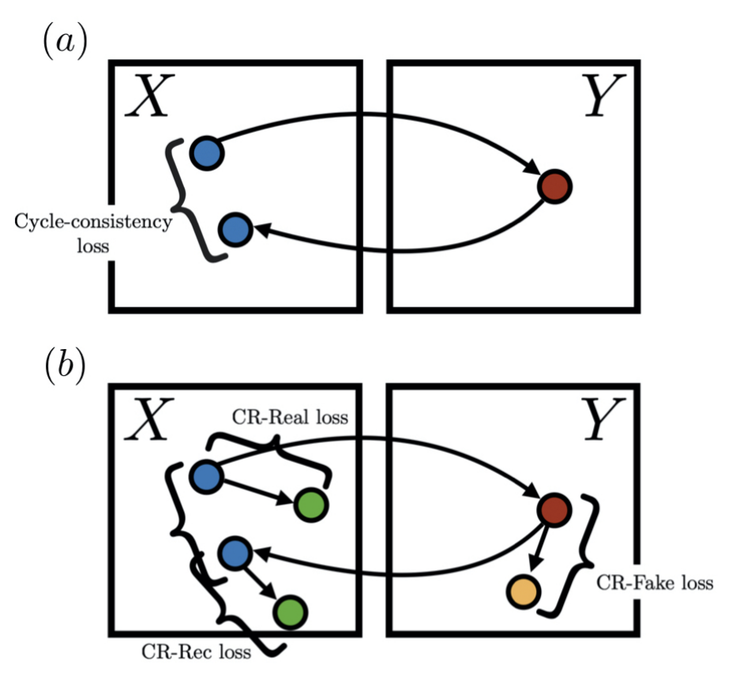

|
|
Take Ohkawa
First-year master student
The University of Tokyo
Tokyo, Japan
E-mail: ohkawa-t [at] iis.u-tokyo.ac.jp
[Resume/CV]
|
|
Hi, I am Take Ohkawa (大川 武彦).
I am a first-year master student at The University of Tokyo (UTokyo), advised by Prof. Yoichi Sato (Vision).
My research interests lie in computer vision, deep learning, and machine learning. I'm specifically curious about spatio-temporal abstraction and prediction for human behavior analysis.
I received my bachelor's degree one-year earlier at the Tokyo Institute of Technology (TokyoTech) advised by Prof. Nakamasa Inoue (Multimedia).
Prior to the laboratory assignment, I voluntarily conducted various research projects, advised by Prof. Koichi Shinoda (Speech), Prof. Yutaka Matsuo (AI), Prof. Naoaki Okazaki (NLP), and Prof. Masakazu Sekijima (BioInfo), researched with Dr. Hirokatsu Kataoka (Vision) at the National Institute of Advanced Industrial Science and Technology (AIST) and Prof. Nakamasa Inoue as a part of cvpaper.challenge and a research assistant, and worked at several companies, such as teamLab,
Neural Pocket, and
Cross Compass.
News
[Apr 2020] I participated in Sato/Sugano Lab, The University of Tokyo.
[Mar 2020] I obtained B.E in Computer Science for 3 years at the Tokyo Institute of Technology.
[Mar 2020] A paper is out on arXiv.
[Oct 2019] I was gifted NVIDIA RTX 2080Ti from Yu Darvish (I admire the most), a Japanese MLB player for the
Chicago Cubs!!!
[Oct 2019] I participated in Inoue Lab, Tokyo Institute of Technology.
Research Interests
Computer Vision, Deep Learning and Machine Learning
Deep Generative Models, Reinforcement Learning, Visual Forecasting, and First-Person Vision
Preprint
|

|
Augmented Cyclic Consistency Regularization for Unpaired Image-to-Image Translation
Takehiko Ohkawa, Naoto Inoue, Hirokatsu Kataoka, Nakamasa Inoue
[arXiv]
[pdf]
|
Research & Work Experience
[Oct 2019 - Present] Research internship, Neural Pocket Inc.
[Feb 2019 - Present] Student researcher, cvpaper.challenge, AIST
[Aug 2019 - Mar 2020] Research assistant (RA), Inoue Lab, Tokyo Institute of Technology
[Aug 2019 - Sep 2019] Engineering internship, teamLab Inc.
[Dec 2017 - Nov 2018] Research internship, Cross Compass Ltd.
Awards
JEES/Softbank AI Scholarship, 2020
Tokio Marine Kagami Memorial Foundation Scholarship, 2018-2020
Skills
Programming: Python, C/C++, Java, Matlab, R, HTML, CSS, Processing
Libraries: PyTorch, Keras, OpenCV, OpenAI Gym, Stanford CoreNLP, NLTK
Links
[Twitter]
[Facebook]
[GitHub]
|